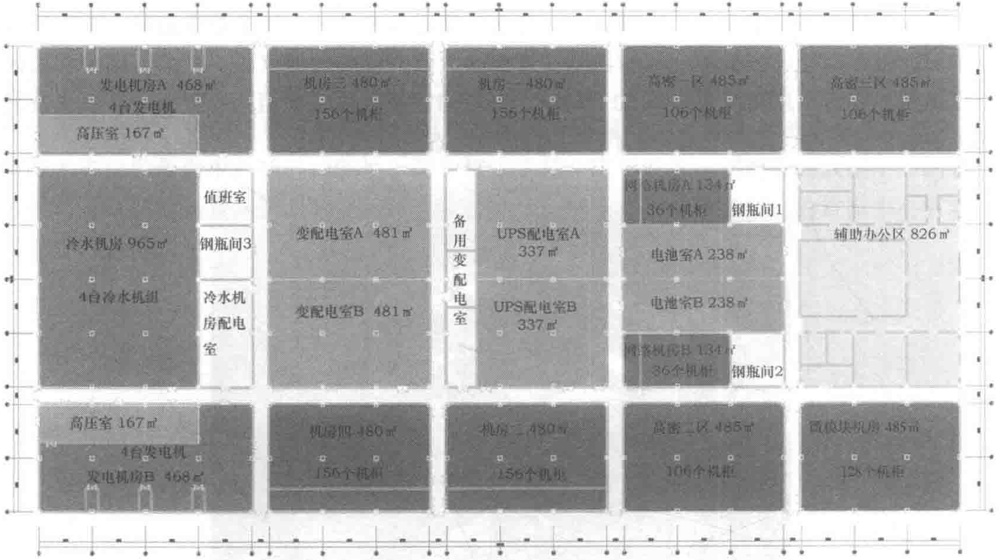

所有数据中心模块全部参照GB 50174—2008《电子信息系统机房设计规范》A级标准及美国TIA-942《数据中心电信基础设施标准》的T3标准进行设计。经测算，数据中心满载时全年平均PUE值小于1.4，达到业内领先水平。整个园区实行分期建设、独立运行的建设策略。预计终期总投入机柜超过5000个，可容纳100 000～150 000台服务器，运算能力不小于100万亿次每秒，存储能力不小于5000PB。
单体数据中心模块占地面积超过12 000m2，为单层混凝土结构，层高10m。整个建筑标高的正负零点高出园区地坪600mm，能有效预防洪涝灾害。数据中心模块内主机房和配电室的布局也是按照整齐划一的模块化思路排列组合，可根据使用需求灵活拼接，调整模块内容，实现系统路由的最优化。数据中心主机房包括普通机房区、高密机房区、定制服务器机房区、微模块区等机柜密度各不相同的机房区域，可提供从4kW到12kW功率的机柜，满足自用、租用多种需求。
本项目在规划设计阶段秉承“由内而外”的原则：即先搭建数据中心核心的基础设施系统，再根据系统形式进行平面布局，然后确定柱网和建筑尺寸，最后再完成整个建筑设计和园区规划。
而在工程实施阶段则是按照“由外而内”的原则：即首先完成园区的整体建设，保证员工有一个良好的办公和生活环境，并且所有数据中心模块的外装施工完毕，后续再根据业务发展的需求分期建设各模块内的基础设施，分期投产运营。这样做可以延缓投资进度，避免资源浪费。京东集团华东数据中心1#模块内部布局如图10-2所示。
